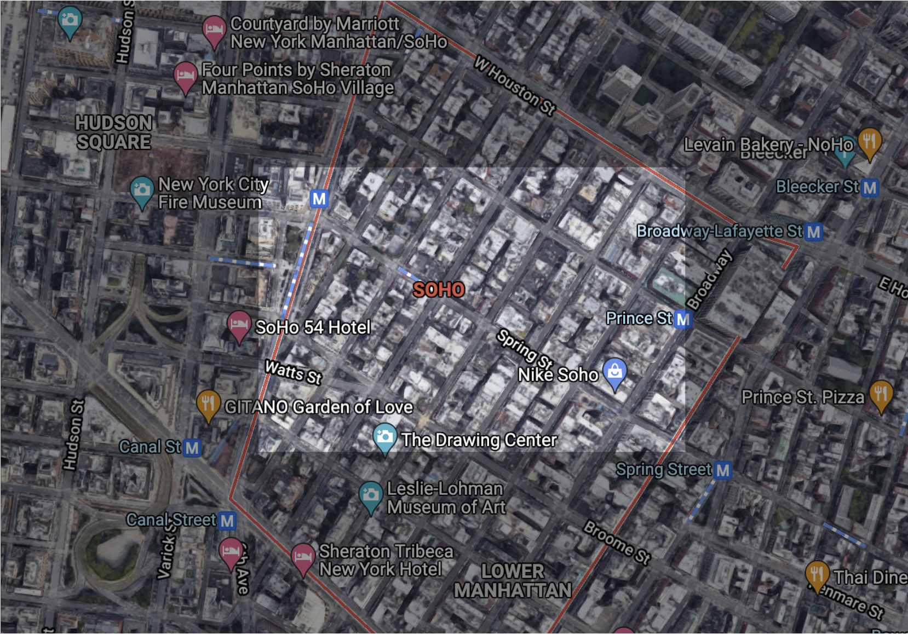
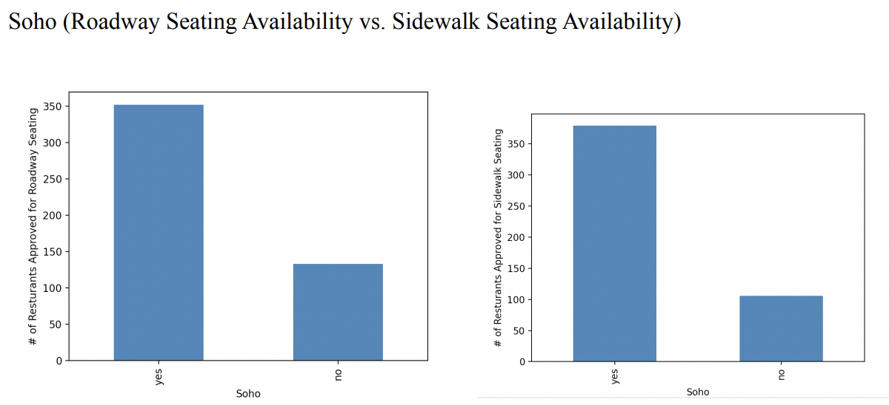
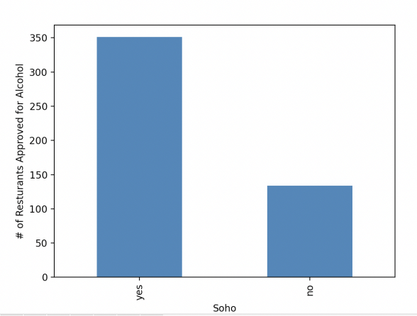

Below is a highlighted map of soho's location
Summary of Rankings: Most of the rankings system rate the individual aspects of each neighborhood, such as nightlife, schooling system, affordability, housing, convenience, safety, and family-friendliness. Some of the ranking systems, such as Niche and Street Advisor, use reviews given by residents in those neighborhoods to aid in the ranking through a five star range. When rating different aspects of the neighborhood, most review systems will cite the experiences of long term residents as evidence. It is categorized by accessibility, cleanliness, and cost. SoHo is ranked 3rd from all 5 reviewed Manhattan neighborhoods. Notable points are -Known for its old-school architecture, trendy stores, and art galleries Soho has some of the best bars, restaurants, parks -Public schooling in Soho is above average -Soho has many places to shop such as H&M, Nike, Louis Vuitton, Zara, and many renowned vintage clothing stores. -Housing in Soho is fairly expensive and the cost of living is very high at a median rent of $2,193 -Although expensive Soho is ranked #9th best neighborhood to raise a family -Like many neighborhood s in Manhattan, commuting is very accessible with many subways and buses available.
While neighborhoods such as the West Village and Midtown were able to top the rankings due to its greater quantity of restaurants, smaller neighborhoods such as the East Village were able to surpass a larger neighborhood like Soho. As seen in the individual neighborhood analysis of the East Village, the neighborhood was known for its artistic scene. SoHo was notabley close to the East Village when it comes to these rankings as well. Lastly, it is important to note that Manhattan in general was able to significantly pass all other boroughs in its alcohol availability by a large margin. Since, Manhattan as a borough is known for its being the center of the city that never sleeps, tourists are attracted to the borough for its lively nightlife and social scene. Therefore, the data supports this theory that Manhattan would have a greater availability of alcohol.
 